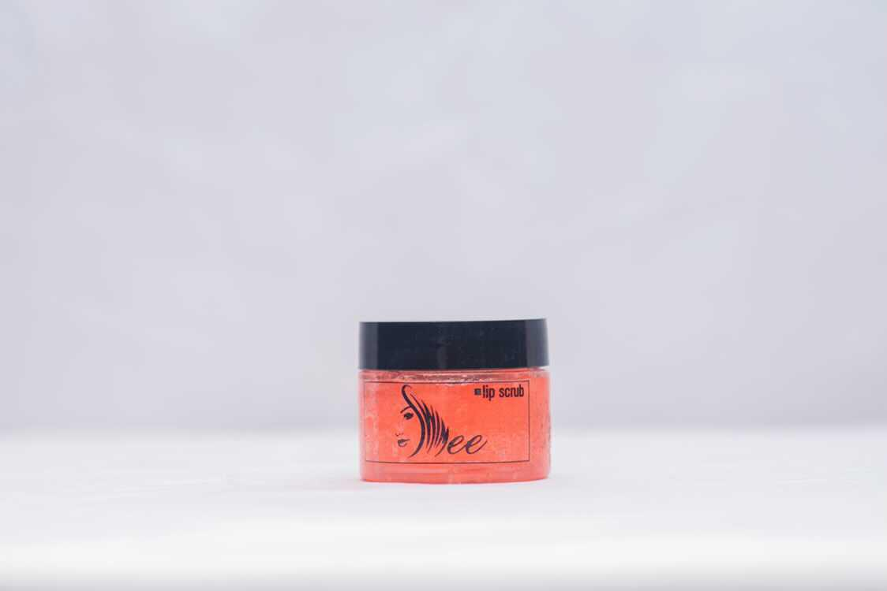

About lip gloss:
Lip gloss
About lip gloss:
Lip gloss can be utilized in extreme weatherconditions.
Extreme cold and heat makes our lips chapped and dry and it result in bleeding and cacked lips.
It also provides a lips glossy luster and adds a beautiful appearance to your lips as well as lip gloss is a make-up base.
Lip gloss also help to get rid of dark lips.
How to apply:
First of all massage lip scrub on your lips to remove dead cells and then rinse it off.
After rinsing it off, you apply your gloss and your lips are good to go.
Lip scrub
About Lip scrub:
Lip scrubs primarily include two components, namely, a moisturizing agent and an exfoliating agent.
A lip scrub should always be a part of your weekly skincare regime.
Gives the lips a great glow even if you are not a fan of makeup and beauty products, a lip scrub is one product that makes your lips naturally glowing to keep your lips looking fully hydrated.
Lip scrubs wash off chapped skin from lips stimulating the growth of fresh skin cells, making them soft, smooth, and obviously more kissable! Exfoliating and cleansing your lips on a weekly basis will keep your lips soft and retain its moisture keeping cracks in check.
How to apply:
All you need to do is scoop out a little bit of the formula out with your finger, and then gently rub it over your lips, massage in the lips for a while and rinse off with water or wipe off with a cloth. Once you've scrubbed and wiped the dry skin away, you'll find your lips soft, hydrated, and refreshed.
Lip scrub should be used at least thrice a week.
Eyeliner
About eyeliner:
Eye liner is commonly used in a daily make-up routine to define the eye or create the look of a wider or smaller eye. It instantly adds thickness, length, and a darker color to the lashes, which draws attention to the eyes and creates definition.
How to apply:
Simply shake the product and start at the outer lash line. Sweep the liquid eyeliner along the upper lash line in small, connected strokes, continuing until you reach the inner corner of your eye to suit your desired shape.
Mascara
About mascara:
Mascara is commonly used to enhance the eyelashes. It may darken, thicken, lengthen, and define the eyelashes.
How to apply:
To apply your mascara, look up, place the wand at the base of your upper lashes, and wiggle it back and forth, coating the base of your lashes. Then pull the wand upward towards the tip of your eyelashes, making sure you're coating every part of your lashes as you pull through and moving slowly to avoid clumping
sehfhgsd
sdsgrgr
rddfhfdgvybhtbuhygijbyhu
gyjgruhy